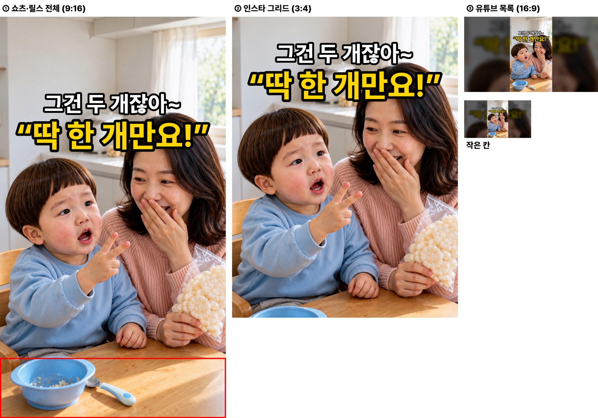
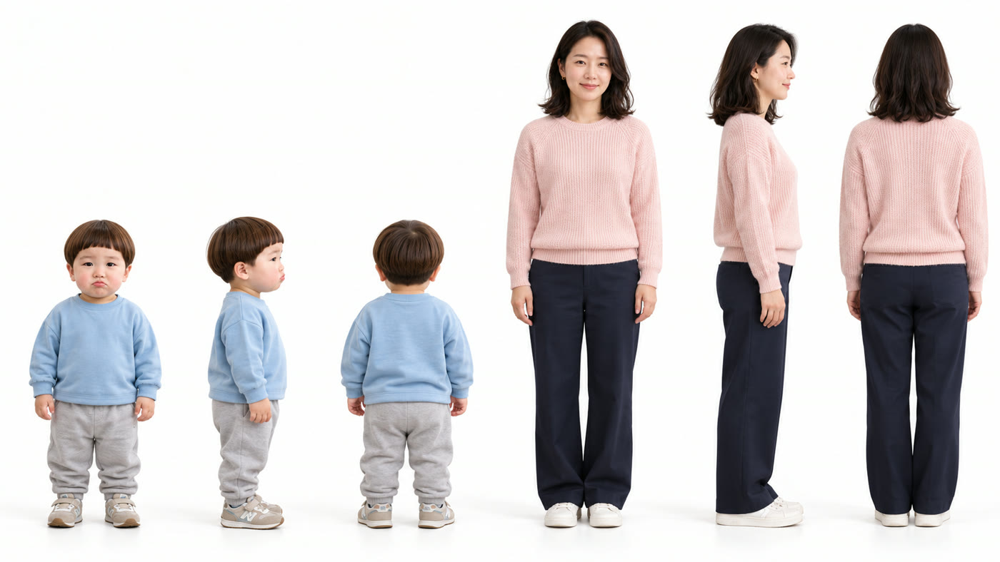
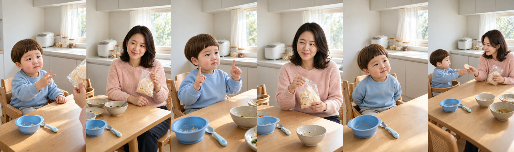
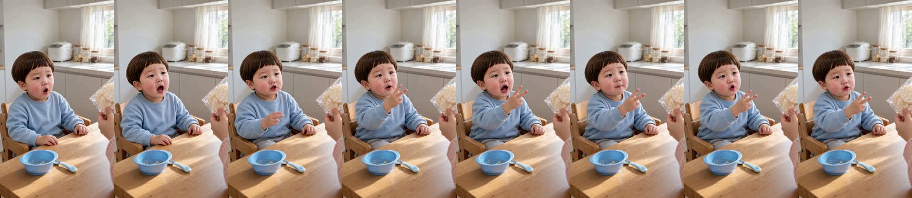
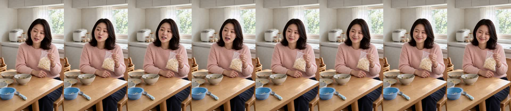
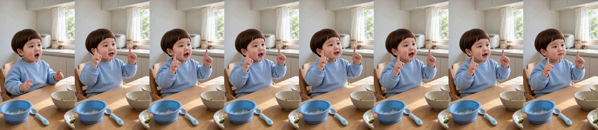
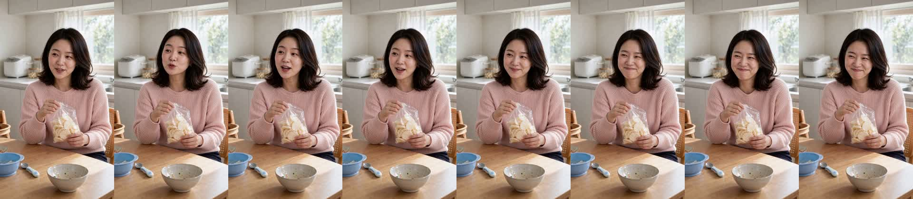
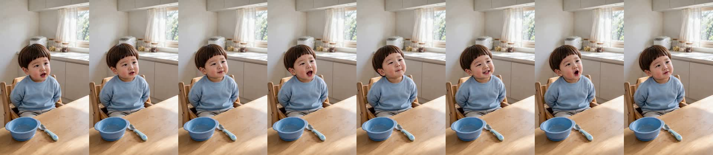
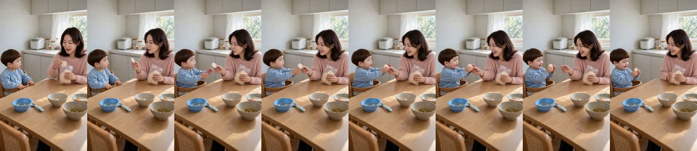

식탁 «떡뻥 딱 한 개만요!» 확인
doyoon-ttokppeong-one-001 · R7 · 17.5초 · 6컷 · D0~D8 통과 · 새 연기 방식 · 2026-10-30
흐름
1 도윤(손가락 두 개를 펴고) «엄마, 떡뻥 딱 한 개만요!» → 2 엄마 «그건 두 개잖아~» → 3 도윤(양손 검지 하나씩) «한 개, 한 개!» → 4 엄마(웃음 참으며) «…그것도 두 개야» → 5 도윤(손을 숨기고 갸웃) «그럼 딱 한 번만요!» → 6 엄마(웃음) «아이고, 못 이기겠다~» · 떡뻥 하나를 건넴.
원작: 여보숏 «딸의 간절한 부탁에 단호한 엄마»(3.7만) — «딱 한 번만요» 조르기. 24개월 간식 확인으로 젤리 대신 떡뻥.
봐 주셔야 할 것
- «떡뻥» 발음 — 받아쓰기에서 컷은 «떡봉», 완성본은 «떡볶»으로 잡혔습니다. 떡뻥으로 들리는지 들어 주세요.
- 1번은 말하면서 손가락 두 개를 들어 올립니다(처음 0.5초는 손이 아래).
- 도윤이 음높이 390·390·348Hz — 모두 경고선(330Hz) 위입니다.
썸네일
흰 줄 = 엄마 대사, 노란 줄 = 도윤 대사. 끝 «그럼 딱 한 번만요!»는 숨겼습니다.

제작 중 다시 한 것
- 1번 시작 그림이 다른 머리 모양·다른 부엌으로 그려져 다시 그렸습니다.
- 엄마가 말하는 2·4번에서 H3 가 엄마 얼굴 클로즈업으로 당겨 «엄마는 머리부터 식탁까지, 아래 그릇, 뒤 창·밥솥»으로 거리를 묶고 다시 뽑았습니다.
- H3 8회(6컷 + 재촬영 2).
컷별 실측
| 컷 | 대사 | 받아쓰기 | 음높이 |
|---|---|---|---|
| 1 도윤 | 엄마, 떡뻥 딱 한 개만요! | 엄마 떡봉 딱 한 개만요 | 390Hz |
| 2 엄마 | 그건 두 개잖아~ | 그건 두 개잖아 | 213Hz |
| 3 도윤 | 한 개, 한 개! | 한 개, 한 개! | 390Hz |
| 4 엄마 | …그것도 두 개야 | 그것도 두 개야 | 201Hz |
| 5 도윤 | 그럼 딱 한 번만요! | 그럼 딱 한 번만요. | 348Hz |
| 6 엄마 | 아이고, 못 이기겠다~ | 아이고 못 이기겠다 | 219Hz |
인물 시트 · 시작 그림


컷 프레임





